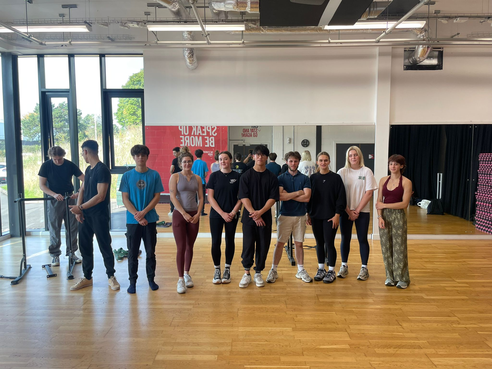
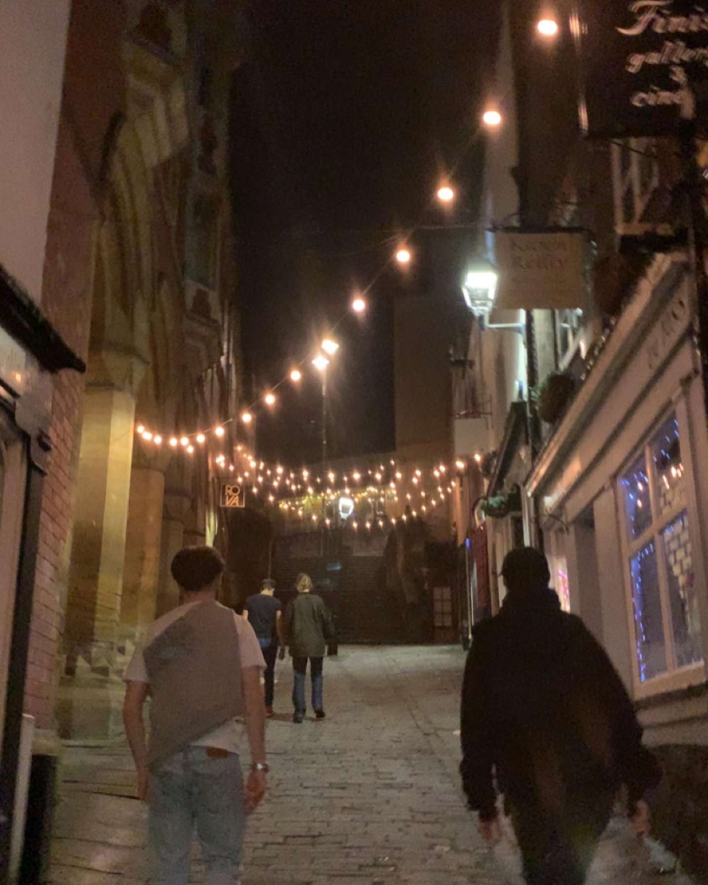
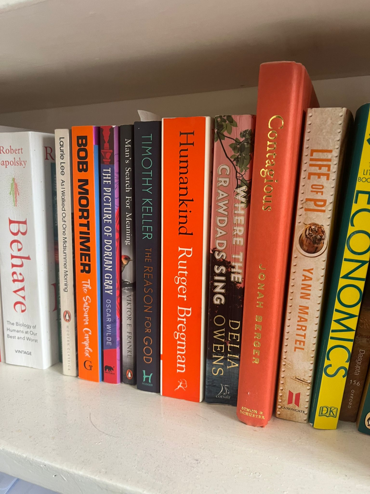

University is not just the timetable. It is the rooms you find yourself in and the people you meet there.
University is not the lectures. Most students do not go anyway.
Why go to university when you can buy the textbooks online?
Because you cannot buy the conversations you have, the societies that you join, the cold kebab on the way to the library, or that first phone call home to ask how to use a washing machine.
Get involved.
Nothing is handed to you at university. However, knock and the door will be opened to you.
This is scary, and really exciting.
University becomes exactly what you make it.
If you want something, go get it. You will be missing out if you do not.

Getting involved changes the size of the place. Suddenly the campus has doors, names, and reasons to stay late.
Explore the city.
Besides Ipswich, the city you are in will have so much to offer.
Take advantage before you go back to the small town you are from.

The city is part of the education too.

The official work still matters. The books are not the whole thing, but they are not nothing.
You should still work hard.
Take the "study" out of student, and all you are left with is a dent in your wallet.
It is not cheap to study at university, this is no secret.
University also gives you, possibly, the most free time you will have as an adult.
That time is costing you, so make sure the cost is worth it.
That £9k could very well be the best investment you ever make.